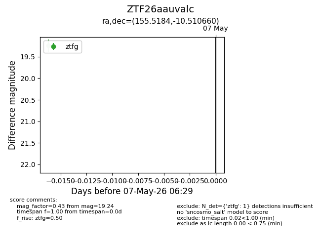
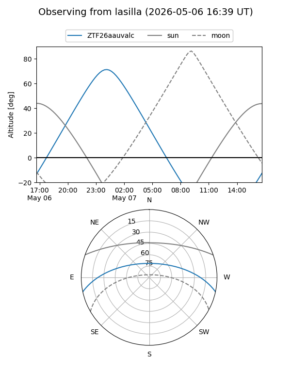
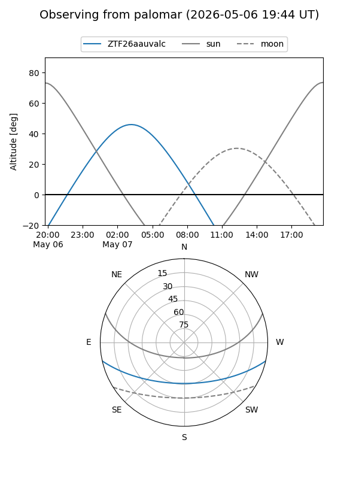

ZTF26aauvalc
Target ZTF26aauvalc at 2026-05-07 06:31
Aliases and brokers:
FINK: link
Lasair: link
ALeRCE: link
alt names
ZTF26aauvalc (ztf,fink_ztf)
Coordinates:
equatorial (ra, dec) = 155.5184,-10.51066
equatorial (HMS+DMS) = 10:22:04.41,-10:30:38.38
galactic (l, b) = (253.9519,+37.77212)
Flags:
Photometry:
last ztfg=19.24
1 ztfg detections
Lightcurve

Visibility


Additional plots